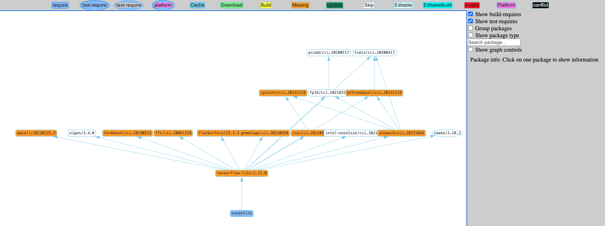

conan graph info¶
$ conan graph info -h
usage: conan graph info [-h] [-f FORMAT] [--out-file OUT_FILE] [-v [V]]
[-cc CORE_CONF] [--name NAME] [--version VERSION]
[--user USER] [--channel CHANNEL]
[--requires REQUIRES] [--tool-requires TOOL_REQUIRES]
[-b BUILD] [-r REMOTE | -nr] [-u [UPDATE]]
[-pr PROFILE] [-pr:b PROFILE_BUILD]
[-pr:h PROFILE_HOST] [-pr:a PROFILE_ALL] [-o OPTIONS]
[-o:b OPTIONS_BUILD] [-o:h OPTIONS_HOST]
[-o:a OPTIONS_ALL] [-s SETTINGS] [-s:b SETTINGS_BUILD]
[-s:h SETTINGS_HOST] [-s:a SETTINGS_ALL] [-c CONF]
[-c:b CONF_BUILD] [-c:h CONF_HOST] [-c:a CONF_ALL]
[-l LOCKFILE] [--lockfile-partial]
[--lockfile-out LOCKFILE_OUT] [--lockfile-clean]
[--lockfile-overrides LOCKFILE_OVERRIDES]
[--check-updates] [--filter FILTER]
[--package-filter PACKAGE_FILTER] [-d DEPLOYER]
[-df DEPLOYER_FOLDER] [--build-require]
[path]
Compute the dependency graph and show information about it.
positional arguments:
path Path to a folder containing a recipe (conanfile.py or
conanfile.txt) or to a recipe file. e.g.,
./my_project/conanfile.txt.
options:
-h, --help show this help message and exit
-f FORMAT, --format FORMAT
Select the output format: html, json, dot
--out-file OUT_FILE Write the output of the command to the specified file
instead of stdout.
-v [V] Level of detail of the output. Valid options from less
verbose to more verbose: -vquiet, -verror, -vwarning,
-vnotice, -vstatus, -v or -vverbose, -vv or -vdebug,
-vvv or -vtrace
-cc CORE_CONF, --core-conf CORE_CONF
Define core configuration, overwriting global.conf
values. E.g.: -cc core:non_interactive=True
--name NAME Provide a package name if not specified in conanfile
--version VERSION Provide a package version if not specified in
conanfile
--user USER Provide a user if not specified in conanfile
--channel CHANNEL Provide a channel if not specified in conanfile
--requires REQUIRES Directly provide requires instead of a conanfile
--tool-requires TOOL_REQUIRES
Directly provide tool-requires instead of a conanfile
-b BUILD, --build BUILD
Optional, specify which packages to build from source.
Combining multiple '--build' options on one command
line is allowed. Possible values: --build=never
Disallow build for all packages, use binary packages
or fail if a binary package is not found, it cannot be
combined with other '--build' options. --build=missing
Build packages from source whose binary package is not
found. --build=cascade Build packages from source that
have at least one dependency being built from source.
--build=[pattern] Build packages from source whose
package reference matches the pattern. The pattern
uses 'fnmatch' style wildcards, so '--build="*"' will
build everything from source. --build=~[pattern]
Excluded packages, which will not be built from the
source, whose package reference matches the pattern.
The pattern uses 'fnmatch' style wildcards.
--build=missing:[pattern] Build from source if a
compatible binary does not exist, only for packages
matching pattern. --build=compatible:[pattern]
(Experimental) Build from source if a compatible
binary does not exist, and the requested package is
invalid, the closest package binary following the
defined compatibility policies (method and
compatibility.py)
-r REMOTE, --remote REMOTE
Look in the specified remote or remotes server
-nr, --no-remote Do not use remote, resolve exclusively in the cache
-u [UPDATE], --update [UPDATE]
Will install newer versions and/or revisions in the
local cache for the given reference name, or all
references in the graph if no argument is supplied.
When using version ranges, it will install the latest
version that satisfies the range. It will update to
the latest revision for the resolved version range.
-pr PROFILE, --profile PROFILE
Apply the specified profile. By default, or if
specifying -pr:h (--profile:host), it applies to the
host context. Use -pr:b (--profile:build) to specify
the build context, or -pr:a (--profile:all) to specify
both contexts at once
-pr:b PROFILE_BUILD, --profile:build PROFILE_BUILD
-pr:h PROFILE_HOST, --profile:host PROFILE_HOST
-pr:a PROFILE_ALL, --profile:all PROFILE_ALL
-o OPTIONS, --options OPTIONS
Apply the specified options. By default, or if
specifying -o:h (--options:host), it applies to the
host context. Use -o:b (--options:build) to specify
the build context, or -o:a (--options:all) to specify
both contexts at once. Example:
-o="pkg/*:with_qt=True"
-o:b OPTIONS_BUILD, --options:build OPTIONS_BUILD
-o:h OPTIONS_HOST, --options:host OPTIONS_HOST
-o:a OPTIONS_ALL, --options:all OPTIONS_ALL
-s SETTINGS, --settings SETTINGS
Apply the specified settings. By default, or if
specifying -s:h (--settings:host), it applies to the
host context. Use -s:b (--settings:build) to specify
the build context, or -s:a (--settings:all) to specify
both contexts at once. Example: -s="compiler=gcc"
-s:b SETTINGS_BUILD, --settings:build SETTINGS_BUILD
-s:h SETTINGS_HOST, --settings:host SETTINGS_HOST
-s:a SETTINGS_ALL, --settings:all SETTINGS_ALL
-c CONF, --conf CONF Apply the specified conf. By default, or if specifying
-c:h (--conf:host), it applies to the host context.
Use -c:b (--conf:build) to specify the build context,
or -c:a (--conf:all) to specify both contexts at once.
Example:
-c="tools.cmake.cmaketoolchain:generator=Xcode"
-c:b CONF_BUILD, --conf:build CONF_BUILD
-c:h CONF_HOST, --conf:host CONF_HOST
-c:a CONF_ALL, --conf:all CONF_ALL
-l LOCKFILE, --lockfile LOCKFILE
Path to a lockfile. Use --lockfile="" to avoid
automatic use of existing 'conan.lock' file
--lockfile-partial Do not raise an error if some dependency is not found
in lockfile
--lockfile-out LOCKFILE_OUT
Filename of the updated lockfile
--lockfile-clean Remove unused entries from the lockfile
--lockfile-overrides LOCKFILE_OVERRIDES
Overwrite lockfile overrides
--check-updates Check if there are recipe updates
--filter FILTER Show only the specified fields
--package-filter PACKAGE_FILTER
Print information only for packages that match the
patterns
-d DEPLOYER, --deployer DEPLOYER
Deploy using the provided deployer to the output
folder. Built-in deployers: 'full_deploy',
'direct_deploy'. Deployers will only deploy recipes,
as 'conan graph info' do not retrieve binaries
-df DEPLOYER_FOLDER, --deployer-folder DEPLOYER_FOLDER
Deployer output folder, base build folder by default
if not set
--build-require Whether the provided reference is a build-require
The conan graph info command shows information about the dependency graph for the recipe specified in path.
Examples:
$ conan graph info .
$ conan graph info myproject_folder
$ conan graph info myproject_folder/conanfile.py
$ conan graph info --requires=hello/1.0@user/channel
The output will look like:
$ conan graph info --require=binutils/2.38 -r=conancenter
...
======== Basic graph information ========
conanfile:
ref: conanfile
id: 0
recipe: Cli
package_id: None
prev: None
build_id: None
binary: None
invalid_build: False
info_invalid: None
revision_mode: hash
package_type: unknown
settings:
os: Macos
arch: armv8
compiler: apple-clang
compiler.cppstd: gnu17
compiler.libcxx: libc++
compiler.version: 14
build_type: Release
options:
system_requires:
recipe_folder: None
source_folder: None
build_folder: None
generators_folder: None
package_folder: None
cpp_info:
root:
includedirs: ['include']
srcdirs: None
libdirs: ['lib']
resdirs: None
bindirs: ['bin']
builddirs: None
frameworkdirs: None
system_libs: None
frameworks: None
libs: None
defines: None
cflags: None
cxxflags: None
sharedlinkflags: None
exelinkflags: None
objects: None
sysroot: None
requires: None
properties: None
label: cli
context: host
test: False
requires:
1: binutils/2.38#0dc90586530d3e194d01d17cb70d9461
binutils/2.38#0dc90586530d3e194d01d17cb70d9461:
ref: binutils/2.38#0dc90586530d3e194d01d17cb70d9461
id: 1
recipe: Downloaded
package_id: 5350e016ee8d04f418b50b7be75f5d8be9d79547
prev: None
build_id: None
binary: Invalid
invalid_build: False
info_invalid: cci does not support building binutils for Macos since binutils is degraded there (no as/ld + armv8 does not build)
url: https://github.com/conan-io/conan-center-index/
license: GPL-2.0-or-later
description: The GNU Binutils are a collection of binary tools.
topics: ('gnu', 'ld', 'linker', 'as', 'assembler', 'objcopy', 'objdump')
homepage: https://www.gnu.org/software/binutils
revision_mode: hash
package_type: application
settings:
os: Macos
arch: armv8
compiler: apple-clang
compiler.version: 14
build_type: Release
options:
multilib: True
prefix: aarch64-apple-darwin-
target_arch: armv8
target_os: Macos
target_triplet: aarch64-apple-darwin
with_libquadmath: True
system_requires:
recipe_folder: /Users/barbarian/.conan2/p/binut53bd9b3ee9490/e
source_folder: None
build_folder: None
generators_folder: None
package_folder: None
cpp_info:
root:
includedirs: ['include']
srcdirs: None
libdirs: ['lib']
resdirs: None
bindirs: ['bin']
builddirs: None
frameworkdirs: None
system_libs: None
frameworks: None
libs: None
defines: None
cflags: None
cxxflags: None
sharedlinkflags: None
exelinkflags: None
objects: None
sysroot: None
requires: None
properties: None
label: binutils/2.38
context: host
test: False
requires:
2: zlib/1.2.13#416618fa04d433c6bd94279ed2e93638
zlib/1.2.13#416618fa04d433c6bd94279ed2e93638:
ref: zlib/1.2.13#416618fa04d433c6bd94279ed2e93638
id: 2
recipe: Cache
package_id: 76f7d863f21b130b4e6527af3b1d430f7f8edbea
prev: 866f53e31e2d9b04d49d0bb18606e88e
build_id: None
binary: Skip
invalid_build: False
info_invalid: None
url: https://github.com/conan-io/conan-center-index
license: Zlib
description: A Massively Spiffy Yet Delicately Unobtrusive Compression Library (Also Free, Not to Mention Unencumbered by Patents)
topics: ('zlib', 'compression')
homepage: https://zlib.net
revision_mode: hash
package_type: static-library
settings:
os: Macos
arch: armv8
compiler: apple-clang
compiler.version: 14
build_type: Release
options:
fPIC: True
shared: False
system_requires:
recipe_folder: /Users/barbarian/.conan2/p/zlibbcf9063fcc882/e
source_folder: None
build_folder: None
generators_folder: None
package_folder: None
cpp_info:
root:
includedirs: ['include']
srcdirs: None
libdirs: ['lib']
resdirs: None
bindirs: ['bin']
builddirs: None
frameworkdirs: None
system_libs: None
frameworks: None
libs: None
defines: None
cflags: None
cxxflags: None
sharedlinkflags: None
exelinkflags: None
objects: None
sysroot: None
requires: None
properties: None
label: zlib/1.2.13
context: host
test: False
requires:
conan graph info builds the complete dependency graph, like conan install does. The main difference is that it doesn’t try to install or build the binaries, but the package recipes will be retrieved from remotes if necessary.
It is very important to note that the conan graph info command outputs the dependency graph for a
given configuration (settings, options), as the dependency graph can be different for different
configurations. This means that the input to the conan graph info command
is the same as conan install, the configuration can be specified directly with settings and options,
or using profiles,and querying the graph of a specific recipe is possible by using the --requires flag as shown above.
You can additionally filter the output, both by filtering by fields (--filter) and by package (--filter-package).
For example, to get the options of zlib, the following command could be run:
$ conan graph info --require=binutils/2.38 -r=conancenter --filter=options --package-filter="zlib*"
...
======== Basic graph information ========
zlib/1.2.13#13c96f538b52e1600c40b88994de240f:
ref: zlib/1.2.13#13c96f538b52e1600c40b88994de240f
options:
fPIC: True
shared: False
Available formatters¶
json formatter¶
For the documentation about the JSON formatter, please check the dedicated section.
dot formatter¶
To use the DOT format, execute the following command:
$ conan graph info --require=binutils/2.38 -r=conancenter --format=dot > graph.dot
This command generates a DOT file with the following content:
digraph {
"cli" -> "binutils/2.38"
"binutils/2.38" -> "zlib/1.2.13"
}
To visualize this graph, you can render it using Graphviz or any compatible tool.
html formatter¶
The HTML formatter provides a visual representation of the dependency graph that is both interactive and user-friendly.
$ conan graph info --require=tensorflow-lite/2.12.0 -r=conancenter --format=html > graph.html
The HTML output displays an interactive graph of your project’s dependencies, featuring nodes for packages with versions, directional arrows for dependencies, and color-coded labels for dependency types. You can interact with the graph to filter visibility of dependencies and access package details and status.
{kind=link}
Note
When using format=html, the generated HTML contains links to a third-party
resource: the vis-network library trough the
vis-network.min.js file. By default, this file is retrieved from Cloudflare.
However, for environments without an internet connection, you will need to create a
template for the file and place it in CONAN_HOME/templates/graph.html to point to
a local version of the remote vis-network.min.js file
Use the template located in
<conan_sources>/conan/cli/formatters/graph/info_graph_html.py as a starting point for
your own.
See also
Check the JSON format output for this command.